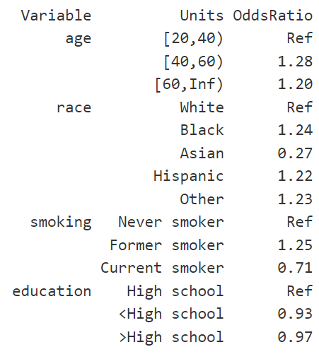

Exercise 1 (D)
You can download all of the related files in a zip file surveydataEx.zip from Github folder, or just by clicking this link directly.
- Navigate to the GitHub folder (above link) where the ZIP file is located.
- Click on the file name (above zip file) to open its preview window.
- Click on the Download button to download the file. If you can’t see the Download button, click on “Download Raw File” link that should appear on the page.
Problem Statement
We will revisit the article by Flegal et al. (2016). Our primary aim this time is to execute the survey data analysis more rigorously, specifically by incorporating essential survey features into our analysis.
This is the same article that we discussed in our data access chapter!
We will reproduce some results from the article. The authors used NHANES 2013-14 dataset to create their main analytic dataset. The dataset contains 10,175 subjects with 12 relevant variables:
- SEQN: Respondent sequence number
- RIDAGEYR: Age in years at screening
- RIAGENDR: Gender
- DMDEDUC2: Education level
- RIDRETH3: Race/ethnicity
- RIDEXPRG: Pregnancy status at exam
- WTINT2YR: Full sample 2 year weights
- SDMVPSU: Masked variance pseudo-PSU
- SDMVSTRA: Masked variance pseudo-stratum
- BMXBMI: Body mass index in kg/m**2
- SMQ020: Whether smoked at least 100 cigarettes in life
- SMQ040: Current status of smoking (Do you now smoke cigarettes?)
Question 1: Creating data and table
1(a) Importing dataset
1(b) Subsetting according to eligibility
Subset the dataset according to the eligibility criteria described in the second paragraph of the Methods section.
- Hint: The authors restricted their study to
- adults aged 20 years and more,
- non-missing body mass index, and
- non-pregnant.
Your analytic sample size should be 5,455, as described in the first sentence in the Results section.
# 20+
dat.analytic <- subset(dat.full, RIDAGEYR>=20) # N = 5,769
# Non-missing outcome
dat.analytic <- subset(dat.analytic, !is.na(BMXBMI)) # N = 5,520
# Non-pregnant
dat.analytic <- subset(dat.analytic, is.na(RIDEXPRG) | RIDEXPRG !=
"Yes, positive lab pregnancy test") # N = 5,455
dim(dat.analytic)
#> [1] 5455 121(c) Reproduce Table 1
Reproduce Table 1 of the article.
Hint 1: The authors reported unweighted frequencies, and thus, survey features should not be utilized to answer this question. Please be advised to order the categories as shown in the table.
tableonepackage could be helpful.Hint 2: the authors did not show the results for the
Otherrace category. But in your table, you could include all race categories.
library(tableone)
dat <- dat.analytic
# Age
dat$age <- cut(dat$RIDAGEYR, c(20, 40, 60, Inf), right = FALSE)
# Gender
dat$gender <- dat$RIAGENDR
# Race/Hispanic origin group
dat$race <- dat$RIDRETH3
dat$race <- car::recode(dat$race, " 'Non-Hispanic White'='White'; 'Non-Hispanic Black'=
'Black'; 'Non-Hispanic Asian'='Asian'; c('Mexican American',
'Other Hispanic')='Hispanic'; 'Other Race - Including Multi-Rac'=
'Other'; else=NA", levels = c("White", "Black", "Asian",
"Hispanic", "Other"))
# Table 1: Overall
tab11 <- CreateTableOne(vars = "age", strata = "race", data = dat, test = F,
addOverall = T)
# Table 1: Male
tab12 <- CreateTableOne(vars = "age", strata = "race", test = F, addOverall = T,
data = subset(dat, gender == "Male"))
# Table 1: Female
tab13 <- CreateTableOne(vars = "age", strata = "race", test = F, addOverall = T,
data = subset(dat, gender == "Female"))
# Reproducing Table 1
tab1a <- list(Overall = tab11, Male = tab12, Female = tab13)
print(tab1a, format = "f") # Showing only frequencies
#> $Overall
#> Stratified by race
#> Overall White Black Asian Hispanic Other
#> n 5455 2343 1115 623 1214 160
#> age
#> [20,40) 1810 734 362 216 412 86
#> [40,60) 1896 759 383 251 449 54
#> [60,Inf) 1749 850 370 156 353 20
#>
#> $Male
#> Stratified by race
#> Overall White Black Asian Hispanic Other
#> n 2638 1130 556 300 573 79
#> age
#> [20,40) 909 386 182 106 189 46
#> [40,60) 897 360 179 120 215 23
#> [60,Inf) 832 384 195 74 169 10
#>
#> $Female
#> Stratified by race
#> Overall White Black Asian Hispanic Other
#> n 2817 1213 559 323 641 81
#> age
#> [20,40) 901 348 180 110 223 40
#> [40,60) 999 399 204 131 234 31
#> [60,Inf) 917 466 175 82 184 10Question 2
2(a) Reproduce Table 1 with survey features [15% grade]
Not in this article but in many other articles, you would see n comes from the analytic sample and % comes from the survey design that accounts for survey features such as strata, clusters and survey weights. In Question 1, you see how n comes from the analytic sample. Your task for Question 2(a) is to create % part of the Table 1 with survey features, i.e., % should come from the survey design that accounts for strata, clusters and survey weights.
Hint 1: Subset the design, not the sample. If you have generated a variable in your analytic dataset (based on eligibility), that variable should also be present in the full dataset.
Hint 2: Generate age, gender, and race variable in your full data (codes shown in Question 1 could be helpful).
Hint 3: Subset the design.
Hint 4: Reproduce Table 1 with the design.
svyCreateTableOnecould be a helpful function.
## Create all variables in the full data
# Age
dat.full$age <- cut(dat.full$RIDAGEYR, c(20, 40, 60, Inf), right = FALSE)
# Gender
dat.full$gender <- dat.full$RIAGENDR
# Race/Hispanic origin group
dat.full$race <- dat.full$RIDRETH3
dat.full$race <- car::recode(dat.full$race, " 'Non-Hispanic White'='White';
'Non-Hispanic Black'='Black'; 'Non-Hispanic Asian'='Asian';
c('Mexican American','Other Hispanic')='Hispanic';
'Other Race - Including Multi-Rac'='Other';
else=NA", levels = c("White", "Black", "Asian",
"Hispanic", "Other"))
## Subset the design
# your codes here
## Table 1
# your codes here
#print(tab1b, format = "p") # Showing only percentages 2(b) Reproduce Table 3 [50% grade]
Reproduce the first column of Table 3 of the article (i.e., among men, explore the relationship between obesity and four predictors shown in the table).
Hint 1: If necessary, re-level or re-order the levels. Use
Publishpackage to report the estimates.Hint 2: Subset the design, not the sample. If you have generated a variable in your analytic dataset (based on eligibility), that variable should also be present in the full dataset.
Hint 3: The authors used SAS to produce the results vs. We are using R. The estimates could be slightly different (in second decimal point) from the estimates presented in Table 3, but they should be approximately similar.
Hint 4: You need to generate two variables,
smoking statusandeducation. The unweighted frequencies should be matched with the frequencies in eTable 1 and eTable 2.
Your odds ratios could be look like as follows:

2(c) Model selection [25% grade]
From the literature, you know that age and race needs to be adjusted in the model, but you are not sure about smoking and education. Run an AIC based backward selection process to figure out whether you want to add smoking or education, or both in the final model in 2(b). What is your conclusion [Expected answer: one short sentence]?
Hint 1: You need to make sure your design (that is based on eligibility) is free from missing values. Even after applying eligibility criteria, you may have some missing values on multiple variables (see eTable 1 and eTable 2). This is especially important for model selection process.
Hint 2: Work with the analytic data, keep only the relevant variables, and then remove missing values. Finally, subset the design and then select your final model.
2(d) Testing for interactions [10% grade]
Check whether the interaction between age and smoking should be added in the 2(b) model (yes or no answer required, along with the code and p-value):